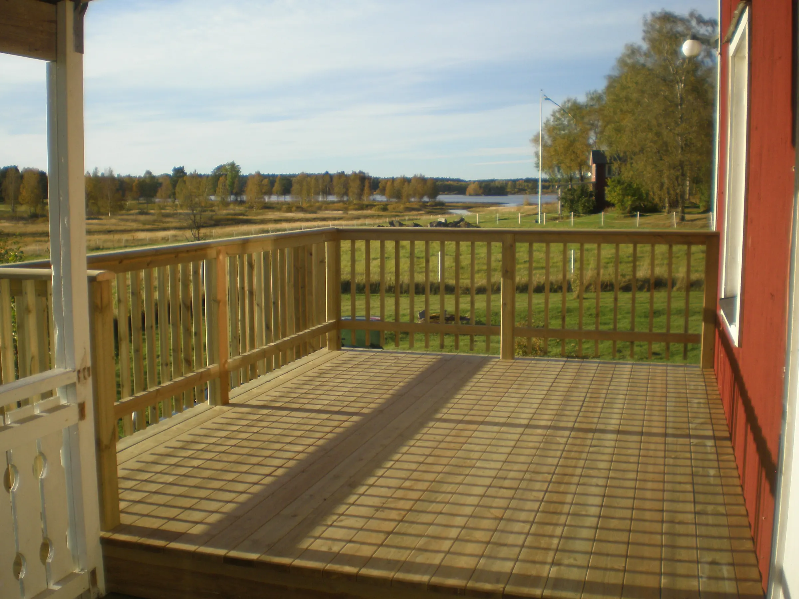

★★★★★
Anders
Byggnadssnickeri & grovsnickeri
Sandviken · 3 juli 2024
Byggföretag i Avesta & Hedemora
Renovering och tillbyggnad med omtanke om huset. Ett litet byggföretag, med Lars som din kontakt.
Ett byggföretag nära dig
Ett äldre hus som behöver omsorg. En altan för sommarkvällar. Eller mer plats för familjen.
Folkare Bygg hjälper dig med reparationer, ombyggnader och tillbyggnader. Du har direkt kontakt med Lars, från första samtalet till arbetet på plats.
Lär känna Folkare ByggVåra tjänster
Små reparationer och större förändringar. Vi tar oss an arbetet utifrån huset och dina behov.
Våra arbeten
Egna bilder från Folkare Byggs arbeten. Titta närmare på hus, uteplatser och snickeridetaljer.

Varsam renovering
Lars har ett särskilt intresse för äldre hus. Vi tar hänsyn till det som redan finns och återanvänder gärna material som fortfarande fungerar.
Om varsam renoveringOmdömen på Dorunner
Betyg kontrollerat 25 november 2026. Omdömena har betyg, men ingen skriven recensionstext.
Så går det till
Ring eller mejla Lars. Ett första hembesök och en offert är kostnadsfritt.
Arbetet, omfattningen och tiden gås igenom innan vi sätter igång.
Lars utför arbetet och samordnar andra hantverkare när det behövs.
Ditt nästa steg
Du behöver inte ha alla svar. Berätta vad du vill göra, så tar vi nästa steg tillsammans.